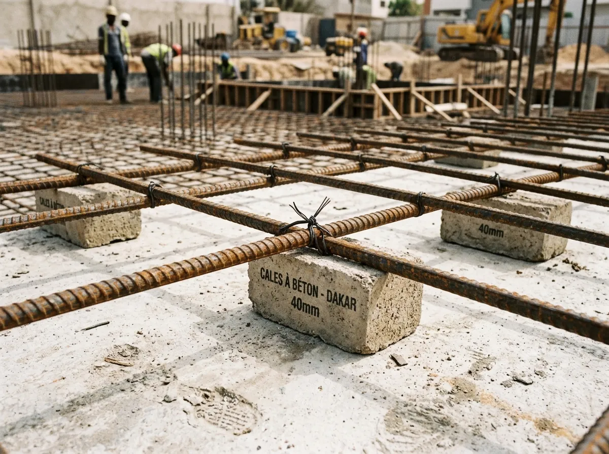
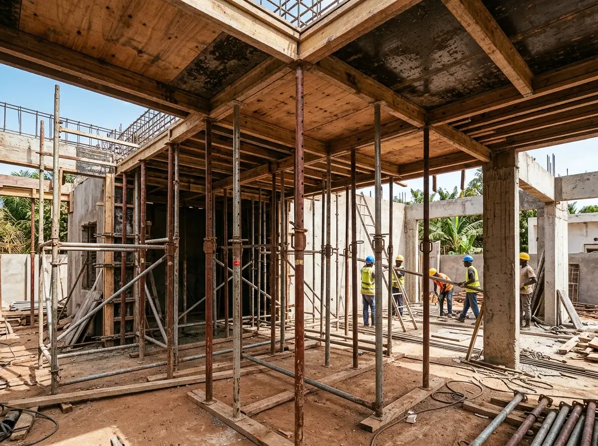

Qu'est-ce qu'un Point d'Arrêt ?
Sur un chantier, la vitesse est souvent l'ennemie de la solidité. Un Point d'Arrêt est une étape critique de la construction où les travaux doivent être impérativement suspendus. Aucun coulage de béton ne peut avoir lieu sans une validation (visa) expresse du maître d'ouvrage ou de son ingénieur de contrôle.
En imposant ces 6 étapes à votre entrepreneur ou tâcheron, vous passez d'une position de spectateur passif à celle de contrôleur éclairé et incontournable.

1. Réception du fond de fouille
Validation indispensable de la profondeur des excavations et de la nature géotechnique du "bon sol".
Un sol meuble non purgé ou une fouille insuffisamment profonde face aux couches argileuses ou sableuses entraînera inévitablement l'affaissement différentiel de la villa entière, provoquant fissures structurelles et désordres majeurs.
2. Conformité structurelle des armatures de semelles et calage
Le ferraillage des fondations ne doit jamais être en contact direct avec la terre ou le fond de fouille (risque d'oxydation et de rouille immédiate des aciers).
On vérifie rigoureusement la présence d'un béton de propreté dosé au minimum à 150 kg/m³ et de cales à béton préfabriquées pour assurer un enrobage réglementaire d'au moins 4 à 5 cm selon les règles de l'art et les standards techniques en vigueur.
3. Ferraillage des poteaux & longueurs de recouvrement
Le fer de l'étage inférieur doit impérativement s'imbriquer dans celui de l'étage supérieur sur une longueur minimale de recouvrement (généralement 40 à 50 fois le diamètre nominal de la barre, soit 50 cm pour des fers de 10 ou 12).
Un recouvrement trop court ou des ligatures lâches constituent une faute grave créant une rupture mécanique en cas de séisme, de tassement ou de surcharge.

4. Étaiement et positionnement du treillis des planchers
Avant d'autoriser le coulage d'une dalle de compression ou d'un plancher nervuré, on vérifie la solidité des étais métalliques, leur contreventement et l'horizontalité du coffrage.
Le treillis soudé doit obligatoirement être surélevé par des distanciers : un treillis posé à plat contre les hourdis ne joue aucun rôle structurel en traction et condamne la dalle à fissurer.
5. Vibration mécanique et consistance du béton
Pendant le coulage, interdiction formelle aux ouvriers d'ajouter de l'eau dans la bétonnière "pour faciliter la mise en œuvre". L'excès d'eau diminue drastiquement la résistance caractéristique du béton.
Le béton doit être systématiquement compacté à l'aide d'une aiguille vibrante mécanique pour chasser l'air emprisonné et éliminer les "nids de gravier" et porosités destructrices.
6. Respect du décoffrage et de la cure humide
Les étais sous une dalle de portée courante ne doivent jamais être retirés avant 21 jours fermes.
De plus, sous le climat sénégalais, la dalle fraîche doit obligatoirement être inondée ou arrosée quotidiennement pendant les 7 premiers jours (cure humide) pour empêcher l'évaporation prématurée et les fissures de retrait thermique.
Comment ChantierSur vous protège
Exigez l'audit de vos étapes clés. Avant de valider un coulage ou de verser un acompte à votre tâcheron, faites vérifier vos photos de ferraillage par nos ingénieurs. Nous vérifions la conformité des aciers, les calages et les recouvrements pour vous prémunir contre les vices cachés.